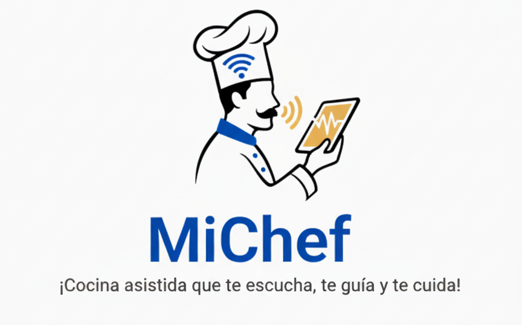
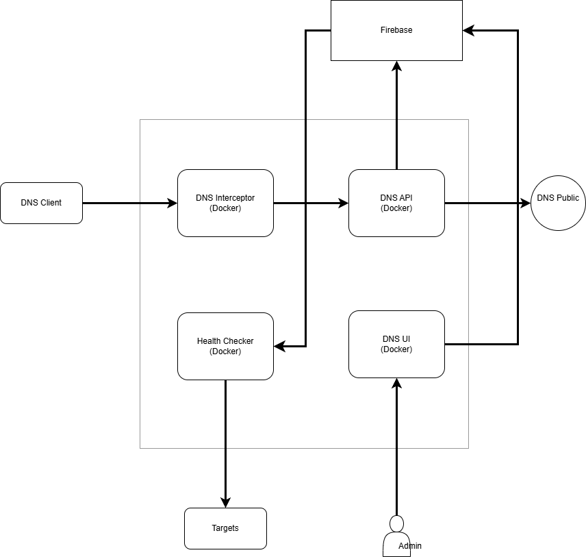
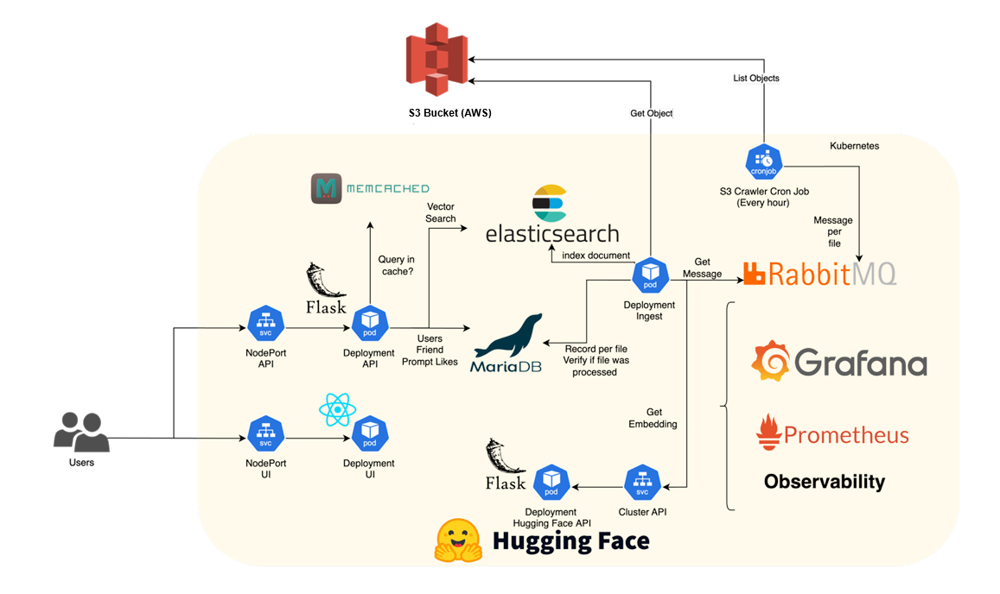
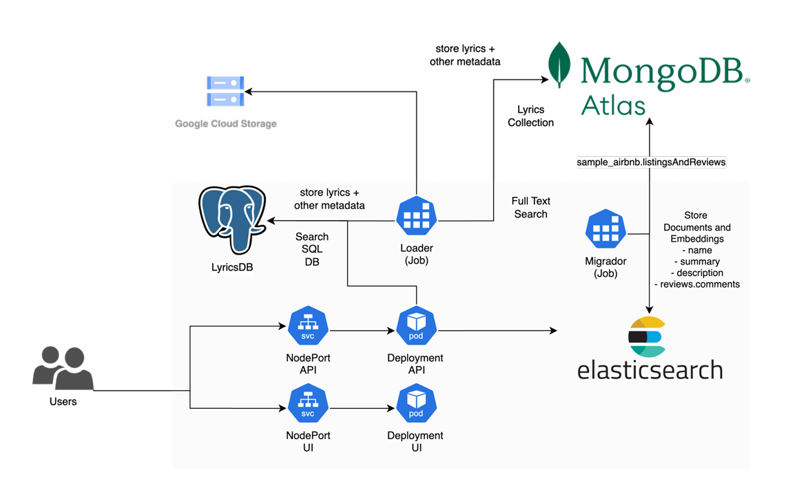

Proyectos Destacados

MiChef
Aplicación móvil que cuenta con accesibilidad para personas con discapacidad visual, la app es un gestor de recetas el cual controla ingredientes, tiempos, cantidades, instrucciones, etc. El app fue desarrolada desde 0 para el curso de diseño de software, con el objetivo de aplicar los conocimientos adquiridos en el curso. La aplicación es funcional tanto para iOS como para Android.
Gestión de Asistencias, Tutorías y Proyectos
Aplicación móvil y web que permite la gestión de asistencias, tutorías y proyectos de estudiantes. Con vista como profesor, administrativo y estudiante del TEC. La aplicación fue desarrollada como una opción para agilizar el proceso de gestión de las actividades academicas y administrativas del TEC eliminando el uso de forms por escuela de TEC y centralizando la información en un sólo sitio de manera más eficiente, con la posibilidad de gestionar los estudiantes, las tutorías, los proyectos y los grupos de trabajo. La aplicación fue desarrollada como parte del curso de Administración de Proyectos y es un ejemplo de cómo se pueden aplicar los conocimientos adquiridos en el curso en proyectos reales. La aplicación es funcional tanto para como para Android.
Nota: este proyecto fue utilizado para aplicar conocimientos adquiridos en el curso de Aseguramiento de la calidad del software.

Servicios de Capa de Aplicación sobre UDP y TCP
Implementación de servicios de red mediante protocolos UDP y TCP. El proyecto incluye un interceptor DNS desarrollado en C, una API REST en Python para resolución de nombres con integración a Firebase, un componente Health Checker y una interfaz de usuario construida en React. Todo el entorno fue orquestado y automatizado haciendo uso de contenedores Docker.

Proxy/Cache de Aplicación con Geolocalización
Implementación de un proxy/cache de aplicación con geolocalización. El proyecto incluye un interceptor DNS y una caché zonal desarrollados en C con algoritmos de reemplazo (LRU, LFU, FIFO, MRU, Random), APIs REST en Python y Node.js para la gestión, y una interfaz de usuario en React. Todo el entorno fue orquestado y automatizado utilizando Kubernetes y Helm Charts.

Semantify
Aplicación para realizar búsquedas de vectores en bases de datos NoSQL. Implementa una arquitectura de microservicios que incluye generación de embeddings con modelos de Hugging Face, un S3 Crawler para procesamiento mediante colas en RabbitMQ, y APIs con soporte de caché en Memcached. Todo el sistema es monitoreado con Prometheus y Grafana, e implementado en un clúster de Kubernetes utilizando Helm Charts.

TuneStay
Prototipo de aplicación web que integra bases de datos SQL (PostgreSQL) y NoSQL (Mongo Atlas, Elasticsearch). Incluye carga de datos masiva desde Google Cloud Storage, generación de embeddings mediante LLMs para búsquedas semánticas de letras de canciones y apartamentos, además de un buscador con opciones de filtrado avanzado (facets). La arquitectura se basa en microservicios desarrollados en Python y React, automatizados completamente en Kubernetes utilizando Helm Charts.
Sitio de Comercio Electrónico
Plataforma e-commerce completa con autenticación JWT y gestión de roles. Incluye un catálogo avanzado con búsqueda, filtros, carrito de compras persistente, reseñas, flujo de pago simulado y gestión de inventario. Además, cuenta con un panel de administración interactivo con gráficos estadísticos de ventas. Backend desarrollado con Node.js y Frontend moderno con Angular y Tailwind CSS.